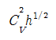
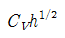
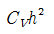
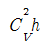

소방설비기사(기계분야) (2004-09-05 기출문제)
1과목: 소방원론
1. 증기가 공기와 혼합기체를 형성하였을 때 연소범위가 가장 넓은 물질은?
- 수소(H2)
- 이황화탄소(CS2)
- 아세틸렌(C2H2)
- 에테르((C2H5)2O)
(정답률: 50%)

2. 가연성 섬유류 등의 연소성을 줄이기 위해서 화학물질을 사용하는 경우가 있는데, 그 방법과 원리로 옳지 않은 것은?
- 화학물질이 불연성 가스를 발생하여 산소를 제거 시킨다.
- 화학물질의 흡열반응을 이용한다.
- 연쇄반응을 변화시킬 수 있는 작은 입자가 생성된다.
- 화학물질이 가연성 섬유의 표면을 용해시켜 분자 조직을 바꾼다.
(정답률: 47%)
3. 어떤 인화성 액체가 공기중에서 열을 받아 점화원의 존재하에 지속적인 연소를 일으킬 수 있는 최저온도를 무엇이라고 하는가?
- 발화점
- 인화점
- 연소점
- 산화점
(정답률: 40%)
4. 다음 중 휘발유의 인화점은?
- -18℃
- -43℃
- 11℃
- 70℃
(정답률: 31%)
5. 알킬알루미늄의 소화에 적합한 소화제는?
- 마른 모래
- 분무상의 물
- 포말
- 이산화탄소
(정답률: 64%)
6. 화재의 소화방법에 대한 설명으로 적당하지 않은 것은?
- 폭풍에 가까운 기류를 일으켜서 연소가 중단되게 한다.
- 물은 불에 닿을 때 증발하면서 열을 다량으로 흡수하여 소화하는 것이다.
- 분말소화약제는 화재표면을 냉각해서 소화하는 것이다.
- 하론가스는 독특한 화재 억제작용으로 소화작용을 한다.
(정답률: 53%)
7. 화재시 발생하는 연기에 관한 설명으로 옳은 것은?
- 연소 생성물이 눈에 보이는 것을 연기라고 한다.
- 수직으로 연기가 이동하는 속도는 수평으로 이동하는 속도와 거의 같다.
- 모든 연기는 유독성의 기체이다.
- 연기는 복사에 의하여 전파된다.
(정답률: 58%)
8. 연기의 농도표시방법 중 단위체적당 연기입자의 갯수를 나타내는 방법은?
- 중량농도법
- 입자농도법
- 투과율법
- 상대농도법
(정답률: 66%)
9. 유류 저장탱크의 화재중 열류층(HEAT LAYER)을 형성, 화재의 진행과 더불어 열류층이 점차 탱크 바닥으로 도달해 탱크 저부에 물 또는 물기름 에멀젼(emulsion)이 수증기로 변해 부피팽창에 의하여 유류의 갑작스런 탱크 외부로의 분출을 발생시키면서 화재를 확대시키는 현상은?
- 보일오버(BOIL OVER)
- 스로프오버(SLOP OVER)
- 프로스오버(FROTH OVER)
- 프래시오버(FLASH OVER)
(정답률: 70%)
10. 습기가 많을 때 그 전달속도가 빨라져서 사람이 방호할수 있는 능력을 떨어지게 하며 폐속으로 급히 흡입하면 혈압이 떨어져 혈액순환에 장애를 초래하게 되어 사망할수 있는 화재의 생성물은?
- 수분
- 분진
- 열
- 연기
(정답률: 46%)
11. 출화 가옥의 기둥, 벽 등은 발화부를 향하여 도괴되는 경향이 있으므로 이곳을 출화부로 추정하는 것을 무엇이라 하는가?
- 접염비교법
- 탄화심도비교법
- 도괴방향법
- 연소비교법
(정답률: 54%)
12. 건물화재시 패닉(panic)의 발생원인과 직접적인 관계가 없는 것은?
- 연기에 의한 시계 제한
- 유독가스에 의한 호흡 장애
- 외부와 단절되어 고립
- 건물의 가연 내장재
(정답률: 67%)
13. 객실부분에 대한 방재적인 피난계획으로 적절하지 못한 것은?
- 각 객실마다 방화구획을 설정한다.
- 객실의 문은 방화문으로 하는 것이 바람직하다.
- 피난복도는 1 방향 피난의 원칙을 지켜야 한다.
- 피난복도는 굴곡을 적게 한다.
(정답률: 74%)
14. 연소억제제 중 무기첨가제에 해당되는 것은?
- 브롬
- 안티몬
- 염소
- 황
(정답률: 44%)
15. 피난시설의 안전구획 설정과 관련이 없는 것은?
- 중간 피난층
- 복도
- 계단부속실(전실)
- 계단
(정답률: 50%)
16. 다음 설명 중 옳지 않은 것은?
- 피난로는 방화대책의 요소중의 하나이다.
- 내화성능 바닥의 기준으로는 철근콘크리트조로서 두께가 10cm이상인 것이다.
- 실내의 난연화는 화재방어의 수단이 아니다.
- 댐퍼는 닫힌 경우에 방화에 지장이 있는 틈이 생기지 않아야 한다.
(정답률: 41%)
17. 주수 소화시 소화효과를 높이기 위한 방법은?
- 물줄기를 높은 곳에서 낮은 곳으로 방사
- 압력을 세게하여 방사
- 다량의 물을 한번에 방사
- 안개모양으로 분무하여 방사
(정답률: 52%)
18. "기체가 차지하는 부피는 압력에 반비례하며 절대온도에 비례한다."와 가장 관련이 있는 법칙은?
- 보일의 법칙
- 샤를의 법칙
- 보일-샤를의 법칙
- 주울의 법칙
(정답률: 65%)
19. 석유, 고무, 동물의 털, 가죽 등과 같이 황성분을 함유하고 있는 물질이 불완전연소될 때 발생하는 연소가스로 계란 썩는 듯한 냄새가 나는 기체는?
- 아황산가스
- 시안화수소
- 황화수소
- 암모니아
(정답률: 48%)
20. 다음 중에서 제 2석유류에 해당되는 것은?
- 에테르, 이황화탄소, 콜로디온
- 아세톤, 가솔린, 벤젠
- 등유, 경유
- 중유, 클레오소트유
(정답률: 60%)
2과목: 소방유체역학
21. 단동 왕복펌프의 플런저 직경이 18 cm, 행정 25 cm, 매분 왕복회수 80, 체적효율 90%일 때 펌프의 양수량은 몇m3/min 인가?
- 0.358
- 0.458
- 0.558
- 0.658
(정답률: 30%)
22. 저장용기로부터 20℃의 물을 길이 300 m, 직경 900 mm인 콘크리트 수평 원관을 통하여 공급하고 있다. 유량이 1.25 m3/s일 때 원관에서의 압력강하는 몇 kPa 인가? (단, 물의 동점성계수는 1.31× 10-6 m2/s이고, 관마찰계수는 0.023이다.)
- 16.1
- 14.7
- 12.3
- 11.9
(정답률: 48%)
23. 에테르, 케톤등의 수용성 용매 화재시 사용하는 포소화약제에 요구되는 특별한 특성은?
- 유동성과 내열성이 우수해야 한다.
- 점도가 매우 높아야 한다.
- 수용성 용매와 수분의 치환 현상이 없어야 한다.
- 수용성 용매와 포의 반응으로 침전물이 생기지 않아야 한다.
(정답률: 25%)
24. [어떤 방법으로도 어떤 계를 절대 0도에 이르게 할 수없다.]는 것과 가장 관련이 있는 것은?
- 열역학 제0법칙
- 열역학 제1법칙
- 열역학 제2법칙
- 열역학 제3법칙
(정답률: 24%)
25. 직경이 30 mm, 관마찰계수가 0.022인 관에 글로브 밸브(부차 손실계수 k=10)와 표준티(k=1.8)를 결합시켜 물을 수송할 경우 관의 상당길이(equivalent length)는 몇 m인가?
- 9.2
- 11.2
- 15.3
- 16.1
(정답률: 34%)
26. 단백질계 공기포 원액의 저장에 대한 설명 중 틀린 것은?
- 유기물이므로 온도가 높으면 원액이 변질되기 쉬우므로 적온으로 저장하는 것이 중요하다.
- 온도는 10 ∼ 35℃ 정도가 적당하다.
- 저온인 경우는 포원액의 화학적 변질과는 별로 관계가 없다.
- 저온인 경우는 유동성이 저하되고 프로포셔너에 의한 혼합비가 저하되어 적정포를 얻을 수 있다.
(정답률: 29%)
27. 직경 5 cm의 원관에 20℃ 물이 흐르는데 층류로 흐를 수 있는 최대 유량은 몇 L/min 인가? (단, 20℃ 물의 동점성계수는 1.0064x10-6 m2/s이고 임계레이놀즈수는 2100 이다.)
- 1.27
- 2.67
- 4.97
- 5.57
(정답률: 48%)
28. 다음 물리량의 차원을 질량[M], 길이[L], 시간[T]로 표시 할 때 잘못 표시된 것은?
- 힘 : MLT-2
- 압력 : ML-2T-2
- 에너지 : ML2T-2
- 밀도 : ML-3
(정답률: 25%)
29. 배관 내의 유량을 직접 측정하기 위한 장치가 아닌 것은?
- 벤튜리미터
- 로타미터
- 오리피스미터
- 마노미터
(정답률: 58%)
30. 저수조의 소화수를 흡상시 펌프의 유효흡입양정(NPSH)으로 적합한 것은? (단, Pa:흡입수면의 대기압, Pv:포화증기압, γ:비중량, Ha:흡입실양정, HL:흡입손실수두)
- NPSH = Pa/γ+ Pv/γ- Ha - HL
- NPSH = Pa/γ- Pv/γ+ Ha - HL
- NPSH = Pa/γ- Pv/γ- Ha - HL
- NPSH = Pa/γ- Pv/γ- Ha + HL
(정답률: 22%)
31. 초기온도와 압력이 50℃, 600 kPa인 완전가스를 100 kPa까지 가역 단열팽창 하였다. 이 때 온도는 몇 K 인가? (단, 비열비 k=1.4 이다.)
- 194
- 294
- 467
- 539
(정답률: 34%)
32. 프루드(Froude)수의 물리적인 의미는?
- 관성력/탄성력
- 관성력/중력
- 관성력/압력
- 관성력/점성력
(정답률: 43%)
33. 수면의 높이가 h인 탱크의 바닥면에 위치한 오리피스에서 유출하는 물의 속도수두는?(Cv : 속도계수)




(정답률: 18%)
34. 제1종 분말 소화약제와 제2종 분말 소화약제의 소화성능에 대한 설명으로 옳은 것은?
- 제2종 분말 소화약제가 모든 화재에서 소화성능이 우수하다.
- 식용유 화재에서는 제1종 분말 소화약제의 소화성능이 우수하다.
- 차고나 주차장의 소화설비에는 제2종 분말 소화약제를 사용한다.
- 제1종 분말 소화약제와 제2종 분말 소화약제의 소화성능은 거의 동등하다.
(정답률: 34%)
35. 주수소화시 물의 표면장력을 약화시켜 연소물에 침투속도를 향상시키는 첨가제를 무엇이라 하는가?
- Ethylene oxide
- Sodium carboxy methyl cellulose
- Wetting agent
- Viscosity agent
(정답률: 24%)
36. [사이클로 작동되면서 저온체에서 고온체로 열을 전달하는 것 외에 아무 효과도 발생하지 않는 장치를 제작하는 것은 불가능하다.]는 표현은 어떤 법칙의 표현인가?
- 열역학 제0법칙
- 열역학 제1법칙
- 열역학 제2법칙
- 에너지보존법칙
(정답률: 58%)
37. 반경이 1 m, 높이가 10 m인 원통형의 그릇에 물이 5 m높이로 채워져 있다. 이 그릇을 중심축에 대하여 각속도 10.5 rad/s으로 일정하게 회전시킬 때 그릇 바닥의 중심에서의 계기압력은 몇 kPa 인가?
- 21.4
- 2.14
- 4.28
- 42.8
(정답률: 0%)
38. 2차원 유동의 속도장이 V =-2xi +2yj 와 같이 주어질 때 점(2,1)을 지나는 유선의 방정식은 ?
- xy = 8
- xy2 = 2
- xy = 2
- x2y = 4
(정답률: 44%)
39. 노즐구경이 같은 옥내소화전 설비에서 노즐의 압력을 4배로 하면 방수량은 몇 배로 되는가?
- 1
- 2
- 3
- 4
(정답률: 43%)
40. 체적이 10m3인 기름의 무게가 30000 N이라면 이 기름의 비중은 얼마인가? (단, 물의 밀도는 1000 kg/m3이다.)
- 0.459
- 0.306
- 0.612
- 0.153
(정답률: 55%)
3과목: 소방관계법규
41. 다음 중 판매할 수 있는 소방용기계· 기구는?
- 형식승인을 신청한 소방용기계· 기구
- 사전제품검사를 받은 소방용기계· 기구
- 형상 등을 임의로 변경하였으나 그 성능에는 이상이 없는 소방용기계· 기구
- 사후제품검사에 불합격하였으나 성능시험결과 그 성능에는 이상이 없는 소방용기계· 기구
(정답률: 28%)
42. 위험물제조소중 위험물을 취급하는 건축물은 특별한 경우를 제외하고 어떤 구조로 하여야 하는가?
- 지하층이 없도록 하여야 한다.
- 지하층을 주로 사용하는 구조이어야 한다.
- 지하층이 있는 2층이내의 건축물이어야 한다.
- 지하층이 있는 3층이내의 건축물이어야 한다.
(정답률: 52%)
43. 특정 소방대상물의 스프링클러설비 설치를 면제받을 수 있는 경우는 ?
- 옥내소화전설비를 설치 하였을 때
- 포소화설비를 설치 하였을 때
- 물분무소화설비를 설치 하였을 때
- 할로겐 화합물소화설비를 설치 하였을 때
(정답률: 56%)
44. 소방시설관리사 자격의 결격사유가 아닌 것은?
- 금치산 선고를 받은 자
- 한정치산 선고를 받은 자
- 파산자로 복권된 자
- 형의 집행유예를 받고 그 기간중에 있는 자
(정답률: 60%)
45. 위험물의 운반시 용기· 적재방법 및 운반방법에 관하여는 화재등의 위해예방과 응급조치상의 중요성을 감안하여 중요기준 및 세부기준은 어느 기준에 따라야 하는가?
- 행정자치부령
- 대통령령
- 소방본부장
- 시· 도의조례
(정답률: 25%)
46. 특정 소방대상물에 선임된 방화관리자가 실시하여야 할 사항이 아닌 것은?
- 소방시설 기타 설비의 설치 및 정비
- 화기취급의 감독
- 자위소방대의 조직
- 피난시설 및 방화시설의 유지· 관리
(정답률: 30%)
47. 소화기구를 설치하여야 할 소방대상물 중 수동식소화기 또는 간이 소화용구를 설치하여야 하는 것은 연면적이 몇 m2 이상인 소방대상물인가?
- 5
- 12
- 25
- 33
(정답률: 62%)
48. 특정 소방대상물의 관계인은 그 장소에 상시 근무 또는 거주하는 자에 대하여 훈련과 방화관리상 필요한 교육을 실시하여야 한다. 다음 중 해당되는 훈련의 종류가 아닌 것은?
- 출동훈련
- 소화훈련
- 피난훈련
- 통보훈련
(정답률: 40%)
49. 다음 시설 중 하자 보수의 보증 기간이 틀린 것은?
- 유도등
- 유도표지
- 비상조명등
- 스프링클러설비
(정답률: 50%)
50. 소방용기계· 기구를 제조하거나 수입하고자 하는자는 형식승인을 얻어야 한다. 형식승인을 받지 않아도 되는 것은?
- 가스누설경보기
- 송수구
- 방수복
- 방염도료
(정답률: 35%)
51. 화재경계지구의 지정은 누가 하는가?
- 시· 도지사
- 소방안전기술위원회
- 의용소방대장
- 한국소방안전협회
(정답률: 69%)
52. 문화집회 및 운동시설로서 무대부의 바닥면적이 몇 m2 이상이면 제연설비를 설치하여야 하는가?
- 50
- 100
- 150
- 200
(정답률: 41%)
53. 지하층을 포함하는 층수가 5층 이상인 건축물로서 연면적 몇 m2 이상일때, 비상조명등을 설치하여야 하는가 ?
- 1,000
- 2,000
- 3,000
- 4,000
(정답률: 41%)
54. 무창층이라 함은 지상층 중 피난 또는 소화활동상 유효한 개구부의 면적의 합계가 당해 층의 바닥면적의 얼마 이하가 되는 층을 말하는가?
- 1/15
- 1/20
- 1/30
- 1/50
(정답률: 41%)
55. 화재의 예방과 경계를 위한 소방신호의 목적이 아닌 것은?
- 화재예방
- 소방활동
- 시설보수
- 소방훈련
(정답률: 58%)
56. 전문소방시설공사업에서 주된 기술인력으로 소방설비기사 자격자는 기계분야와 전기분야로 구분하여 각 몇 명 이상 이어야 하는가?
- 기계분야 : 1명이상, 전기분야 : 1명이상
- 기계분야 : 2명이상, 전기분야 : 1명이상
- 기계분야 : 2명이상, 전기분야 : 2명이상
- 기계분야 : 3명이상, 전기분야 : 3명이상
(정답률: 42%)
57. 소방시설의 완공검사는 누가 하는가?
- 소방설비기술사
- 소방감리업자
- 소방본부장 또는 소방서장
- 시ㆍ도지사
(정답률: 48%)
58. 소방활동에 필요한 소방용수시설은 누가 설치하고 유지·관리 하여야 하는가?
- 시· 도지사
- 소방본부장 또는 소방서장
- 수자원개발공사
- 행정자치부
(정답률: 48%)
59. ( ① ) 또는 ( ② )은 소방업무를 보조하기 위하여 특별 시·광역시와 시·읍·면에 의용소방대를 둔다. ①, ② 에 각각 들어갈 말은?
- ① 대통령 ② 행정자치부장관
- ① 행정자치부장관 ② 시.도지사
- ① 시.도지사 ② 소방본부장
- ① 소방본부장 ② 소방서장
(정답률: 34%)
60. 소방용수시설의 저수조는 지면으로부터의 낙차가 몇 m 이 하이어야 하는가?
- 3
- 4.5
- 6
- 7.5
(정답률: 48%)
4과목: 소방기계시설의 구조 및 원리
61. 옥내소화전이 1층에 4개, 2층에 4개, 3층에 2개가 설치된 소방대상물이 있다. 옥내소화전 설비를 위해 필요한 최소 수원의 수량은?(2021년 04월 01일 개정된 규정 적용됨)
- 2.6m3
- 5.2m3
- 13m3
- 26m3
(정답률: 52%)
62. 스프링클러 헤드 설치시 유지하여야 할 수평거리 중 맞지 않는 것은?
- 무대부에 있어서는 1.7m 이하
- 랙크식 창고에 있어서는 2.5m 이하
- 아파트에 있어서는 3.2m 이하
- 연소우려 있는 부분의 개구부에는 3.0m 이하
(정답률: 55%)
63. 대형 수동식 소화기의 능력단위 기준 및 보행거리 배치 기준이 적절하게 표시된 항목은?
- A급화재 : 10단위 이상, B급화재 : 20단위 이상 보행거리 : 30m 이내
- A급화재 : 20단위 이상, B급화재 : 20단위 이상 보행거리 : 30m 이내
- A급화재 : 10단위 이상, B급화재 : 20단위 이상 보행거리 : 40m 이내
- A급화재 : 20단위 이상, B급화재 : 20단위 이상 보행거리 : 40m 이내
(정답률: 67%)
64. 방호구역의 체적이 700m3 이고 개구부에 자동폐쇄장치를 설치하지 아니한 부분이 40m2인 경우 할로겐 화합물 소화 설비 할론 1301의 전역 방출방식을 설치할 경우 저장량으로서 맞는 것은?
- 250kg 이상
- 310kg 이상
- 320kg 이상
- 350kg 이상
(정답률: 46%)
65. 다음 중 소화기의 가압용가스용기를 검정받을 때 실시하는 시험 종류가 아닌 것은?
- 수압시험
- 파괴압시험
- 압괴시험
- 작동봉판의 강도시험
(정답률: 38%)
66. 다음 중 Ⅱ형 포 방출구의 구성요소가 아닌 것은 어느 것인가?
- 챔버
- 노즐
- 디플렉터
- 폼메이커
(정답률: 37%)
67. 사강식 구조대의 점검에서 중요하다고 볼수 없는 것은?
- 취부금구에 부식이 없는가?
- 유도 로프의 모래주머니 속 모래가 굳어 있지 않았는가?
- 구조대가 바르게 접혀 있는가?
- 지상 고정환이 진흙에 묻혀 있지 않았는가?
(정답률: 42%)
68. 상수도 소화용수설비의 유효반경은?
- 보행거리 120m 이하
- 보행거리 140m 이하
- 소화대상물 수평투영면의 각 부분으로부터 120m 이하
- 수평투영면의 각 부분으로부터 140m 이하
(정답률: 48%)
69. 제 1종 분말을 사용한 전역 방출 방식의 분말 소화설비에 있어서 방호구역 1m3에 대한 소화약제의 저장량은 얼마인가?
- 0.6kg
- 0.36kg
- 0.24kg
- 0.72kg
(정답률: 53%)
70. 공장, 창고등 단층의 바닥면적이 큰 건물에 스모크 해치를 설치하는 수가 있는데 그 효과를 높이기 위한 장치는?
- 드래프트 커텐
- 제연 덕트
- 배출기
- 보조 제연기
(정답률: 49%)
71. 다음 중 자동경보밸브의 오보를 방지하기 위하여 설치하는 것은?
- 배수밸브
- 압력스위치
- 작동시험밸브
- 리타팅챔버
(정답률: 70%)
72. 12층 건물에 설치하는 스프링클러 설비에 있어서 필요한 소화펌프에 직결시킬 전동기 용량(kW)으로 적절한 것은? (단, Q는 2.4m3/min, 펌프의 전양정은 70m, E는 0.6, 전달계수는 1.1 이다.)
- 20[kW]
- 30[kW]
- 40[kW]
- 50[kW]
(정답률: 66%)
73. 지하가의 바닥면적이 3500m2이다. 연결송수관설비의 방수구는 소방대상물 각 부분으로부터 수평거리 얼마 이하가 되도록 설치하여야 하나?
- 25m
- 30m
- 40m
- 50m
(정답률: 48%)
74. 연결살수 설비의 살수헤드 설치면제 장소가 아닌 곳은?
- 고온의 용광로가 설치된 장소
- 물과 격렬하게 반응하는 물품의 저장 또는 취급하는 장소
- 가연성 가스를 저장, 취급하는 장소
- 냉장창고 또는 냉동창고의 냉장실 또는 냉동고
(정답률: 47%)
75. 제연구역에 대한 설명 중 잘못된 것은?
- 하나의 제연구역 면적은 1000m2이내로 하여야 한다.
- 거실과 통로는 상호 제연구획하여야 한다.
- 제연구역의 구획은 보, 제연경계벽 및 벽으로 하여야 한다.
- 통로상의 제연구역은 보행 중심선의 길이가 최대 70m 이내이어야 한다.
(정답률: 71%)
76. CO2, 하론, 분말설비와 같은 특수소화설비의 배관에 대한 사항 중 옳지 않은 것은?
- 할로겐화합물 소화설비의 배관에는 배관용 스텐레스 강관을 사용하는 경우가 있다.
- 분말 소화설비의 배관은 균등 배관을 한다.
- 불연성 가스 소화설비의 배관에는 탄산가스를 사용하는 경우 가스관을 사용한다.
- 특수 소화설비의 배관은 내식성이 있거나 내식처리된 것을 사용하고 있다.
(정답률: 48%)
77. 소화용수설비의 설치기준 중 맞지 않는 것은?
- 채수구는 지면으로부터 높이가 0.8m이상 1.0m이하의 위치에 설치한다.
- 유량 0.8m3/분 이상인 유수를 사용 할 시 소화수조를 설치하지 않을 수 있다.
- 소화용수가 지면으로부터 깊이가 4.5m이상인 경우 가압송수장치를 설치한다.
- 흡수관 투입구는 직경이 0.6m 이상으로 하여야 한다.
(정답률: 57%)
78. 옥외소화전이 3개 설치된 소방대상물에서 동시에 2개를 개방하였을 때 노즐선단의 압력은 얼마 이상이어야 하나?
- 1.7kgf/cm2
- 2.5kgf/cm2
- 3.5kgf/cm2
- 4kgf/cm2
(정답률: 32%)
79. 차고 또는 주차장에 설치하는 물분무 소화설비의 배수설비에 대한 설명이다. 옳지 않은 것은?
- 높이 5cm 이상의 경계턱으로 배수설비를 설치하여야한다.
- 길이 40m 이하마다 기름분리장치를 설치하여야 한다.
- 배수구 쪽으로 2/100의 기울기를 유지하여야 한다.
- 배수설비는 가압송수장치의 송수능력을 고려하여 설치하여야 한다.
(정답률: 62%)
80. 다음에 열거하는 펌프 중 소화용 펌프로 사용되지 않는 것은?
- 볼류트 펌프
- 수압 펌프
- 터빈 펌프
- 원심 펌프
(정답률: 45%)